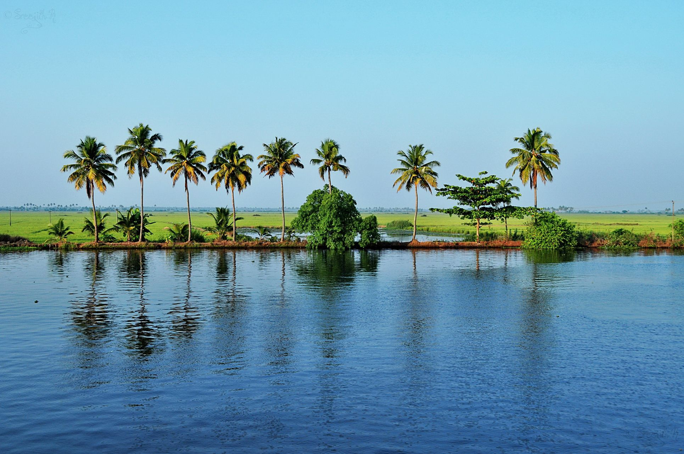
Alapuzha
Alappuzha, also known as Alleppey, is a picturesque town in the South Indian state of Kerala. It is renowned for its beautiful backwaters, serene lakes, and a network of canals.Alappuzha's natural beauty, cultural richness, and the unique experience of cruising through its backwaters make it a popular destination for tourists seeking a serene and culturally vibrant getaway in Kerala
Know More
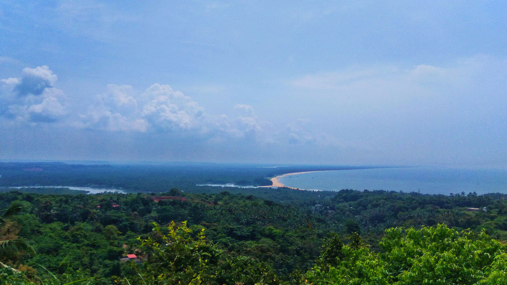
Kannur
Kannur, located in the northern part of the Kerala, is a region known for its rich cultural heritage, historical significance, and natural beauty.Kannur's blend of history, culture, and natural beauty makes it a diverse and interesting destination for those seeking to explore Kerala beyond its popular tourist hubs. The town offers a glimpse into Kerala's vibrant traditions and historical evolution. Know More
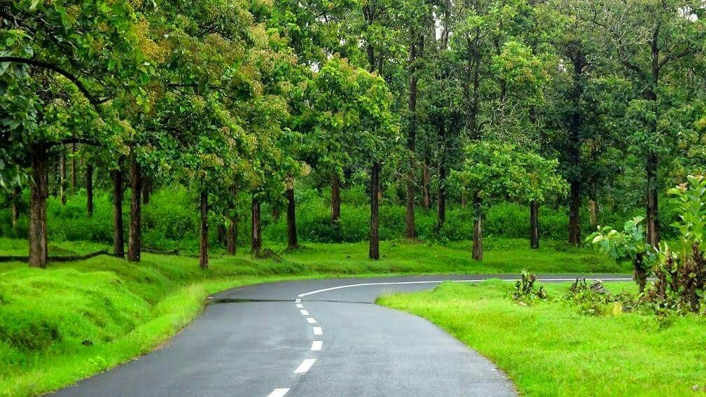
Kottayam
Kottayam is known for its rich cultural heritage, religious diversity, and scenic landscapes.Kottayam's blend of religious diversity, cultural richness, and natural beauty makes it a unique destination in Kerala. Whether you're interested in exploring historic temples, enjoying backwater cruises, or experiencing the cultural heritage of Kerala, Kottayam has much to offer.
Know More
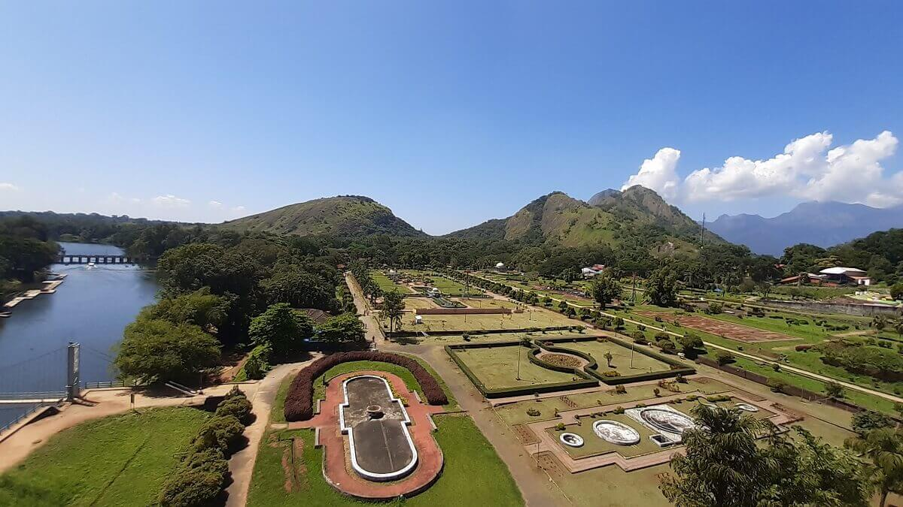
Palakkad
Palakkad, also known as Palghat, is a district in the state of Kerala, India. It is situated in the central part of the state and is known for its historical significance, cultural heritage, and natural beauty. Palakkad's unique blend of historical sites, natural attractions, and cultural richness makes it a diverse and interesting destination in Kerala.
Know More
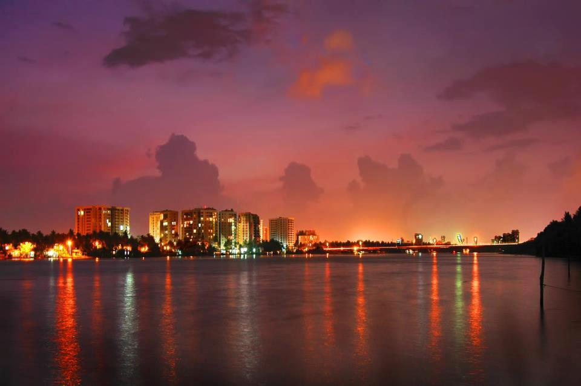
Ernakulam
Ernakulam is a district located in the central part of the Indian state of Kerala. It is a major commercial and industrial hub and serves as the commercial capital of Kerala. Ernakulam's strategic location, economic significance, and cultural richness make it a dynamic and influential district in Kerala.
Know More
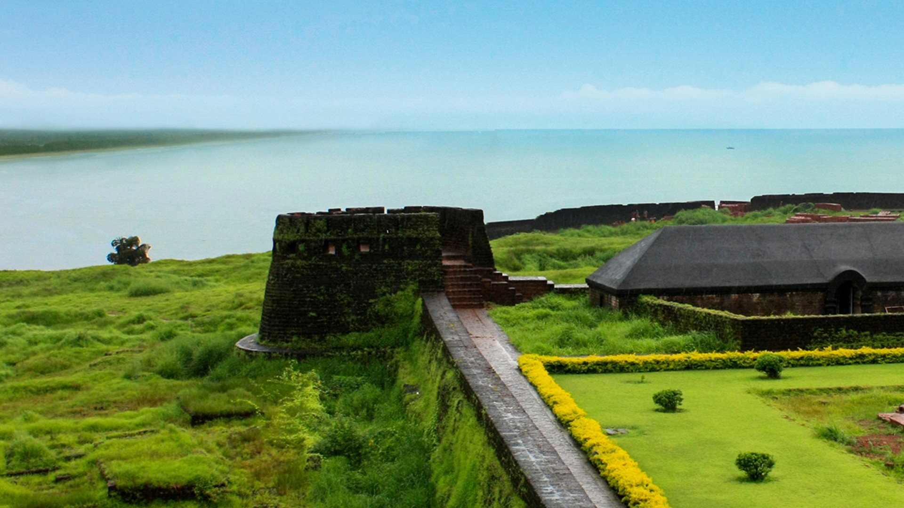
Kasargod
Kasaragod is the northernmost district of the Indian state of Kerala, located on the southwest coast of the country. Known for its scenic beauty, cultural diversity, and historical significance, Kasaragod offers a unique blend of coastal landscapes, backwaters, and cultural heritage.
Know More
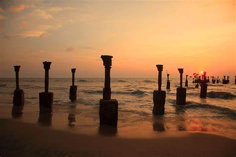
Kozhikode
Kozhikode, also known as Calicut, is a city located on the southwest coast of India in the state of Kerala. It holds historical significance as a prominent trading port and has played a crucial role in the cultural and economic history of the region.Kozhikode's historical legacy and natural beauty make it an interesting destination.
Know More
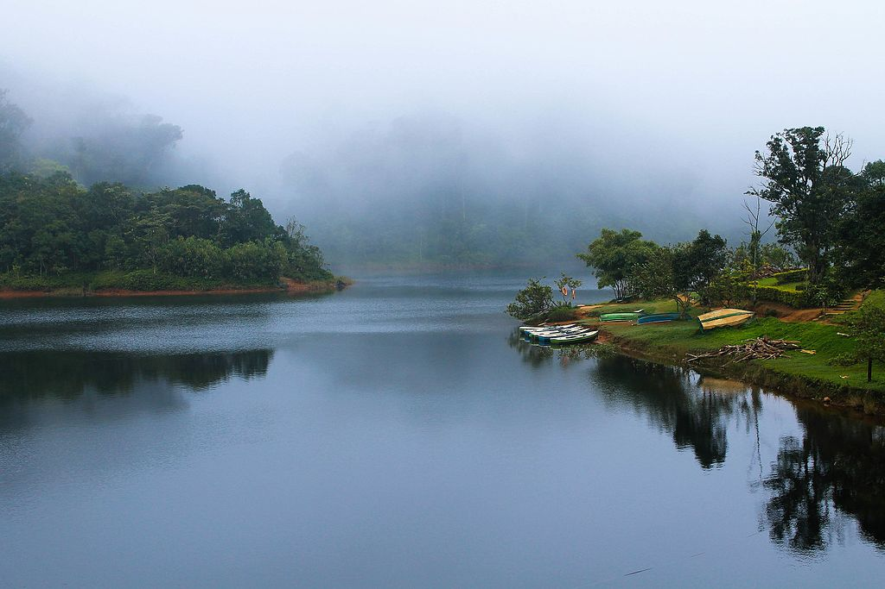
Pathanamthitta
Pathanamthitta is located in the southern part of the Indian state of Kerala. Known for its rich cultural and religious heritage, scenic landscapes, and diverse ecosystems, Pathanamthitta attracts pilgrims, nature lovers, and tourists. Pathanamthitta's combination of religious significance, and cultural richness makes it a diverse district.
Know More
Idukki
Idukki is a district in the Indian state of Kerala, known for its stunning landscapes, rich biodiversity, and diverse cultural heritage.Idukki's natural beauty, wildlife sanctuaries, and cultural diversity make it a prominent destination for eco-tourism and a haven for those seeking tranquility amidst nature.
Know More
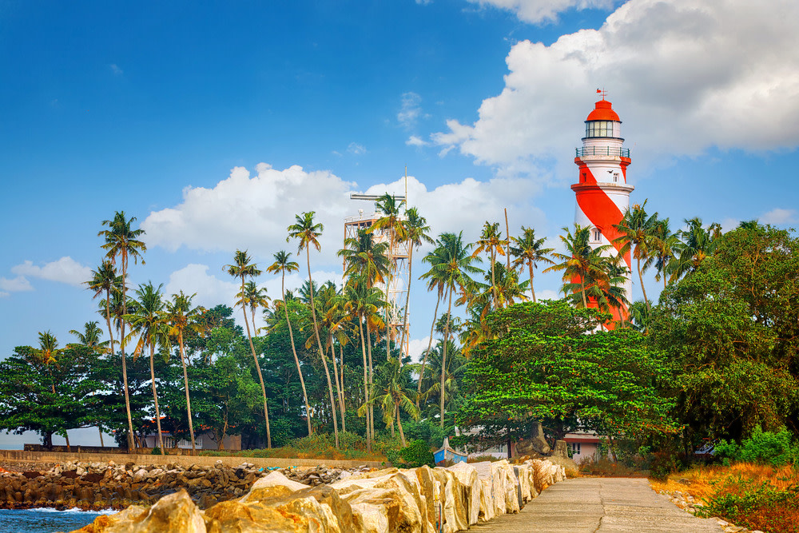
Kollam
Kollam, also known as Quilon, is located on the southwest coast of the country. It is known for its historical significance, cultural heritage, and natural beauty.Kollam's blend of natural beauty, historical sites, and cultural richness makes it a fascinating destination for travelers.
Know More
Malappuram
Malappuram, a district in the Indian state of Kerala, is known for several unique features and specialties. It is a unique blend of tradition and modernity, and it continues to be an important district in the cultural and economic landscape of Kerala.
Know More
Thiruvananthapuram
Thiruvananthapuram, commonly known as Trivandrum, is the capital city of the Indian state of Kerala. It serves as the political and administrative hub of Kerala. It combines historical charm with modern developments, making it a significant cultural, educational, and technological center in the state of Kerala.
Know More
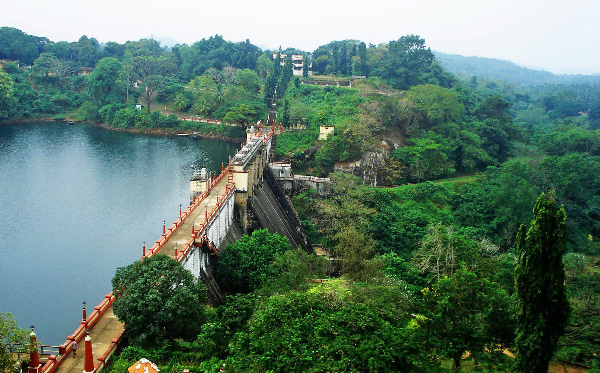
Thrissur
Thrissur, also known as Trichur, is a city in the state of Kerala, India. It holds historical and cultural significance and is often referred to as the "Cultural Capital of Kerala.It is a city that preserves Kerala's cultural roots while embracing modern developments. It remains a significant center for the arts, culture, and religious traditions in the state.
Know More
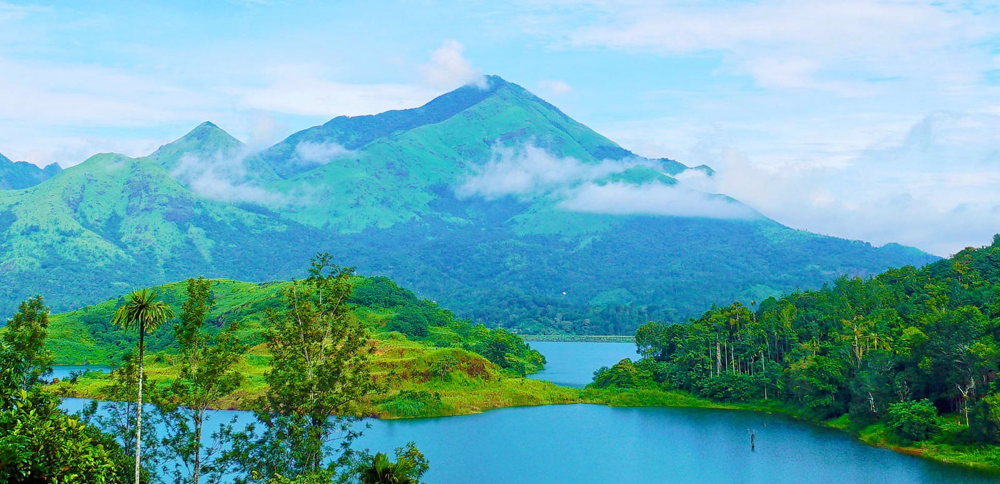